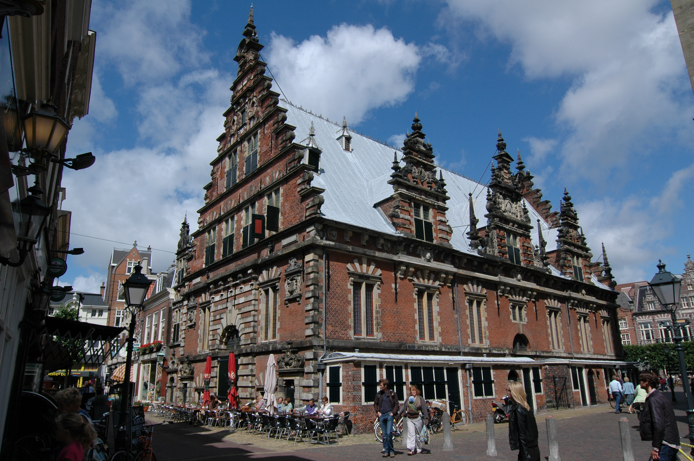

De Stad
Er is veel te bewonderen in haarlem
Haarlem is de zesde monumentenstad van Nederland. De stad telt 1149 rijksmonumenten. Daarnaast telt de stad zo'n 1238 gemeentelijke monumenten. Bovendien is de historische binnenstad aangewezen als beschermd stadsgezicht. In de binnenstad staan dan ook de meeste van de monumenten, zoals de Grote of Sint-Bavokerk, het Stadhuis en de Vleeshal. De stad kent echter ook een aantal toonaangevende moderne bouwwerken, zoals de Toneelschuur, het Patronaat, de nieuwbouw van de Stadsschouwburg en het voormalige kantoor van de ING Bank aan de Wilhelminastraat.
De Grote Markt ligt centraal in de oude binnenstad van Haarlem en wordt gedomineerd door de Sint-Bavokerk. Aan de westzijde bevindt zich het stadhuis, een rechthoekig gebouw met kantelen en een toren. Op de plaats waar het stadhuis is gebouwd stond vroeger een jachtslot van de Graven van Holland. De Hoofdwacht, eveneens gelegen aan de Grote Markt, is gebouwd in de 13e eeuw en daarmee een van de oudste monumenten in de stad.